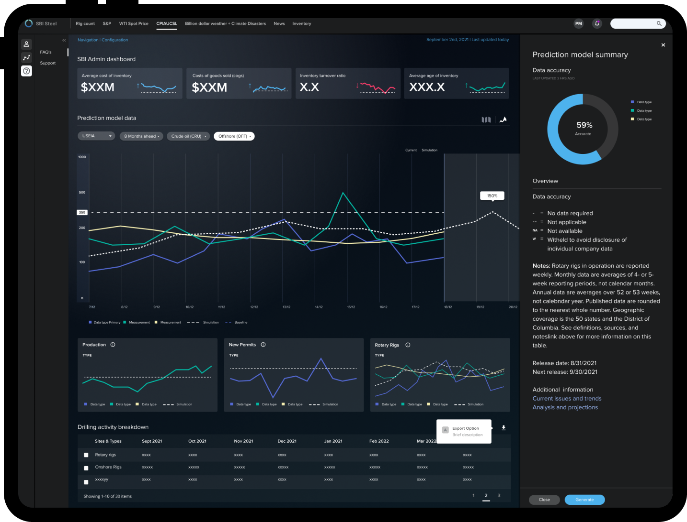
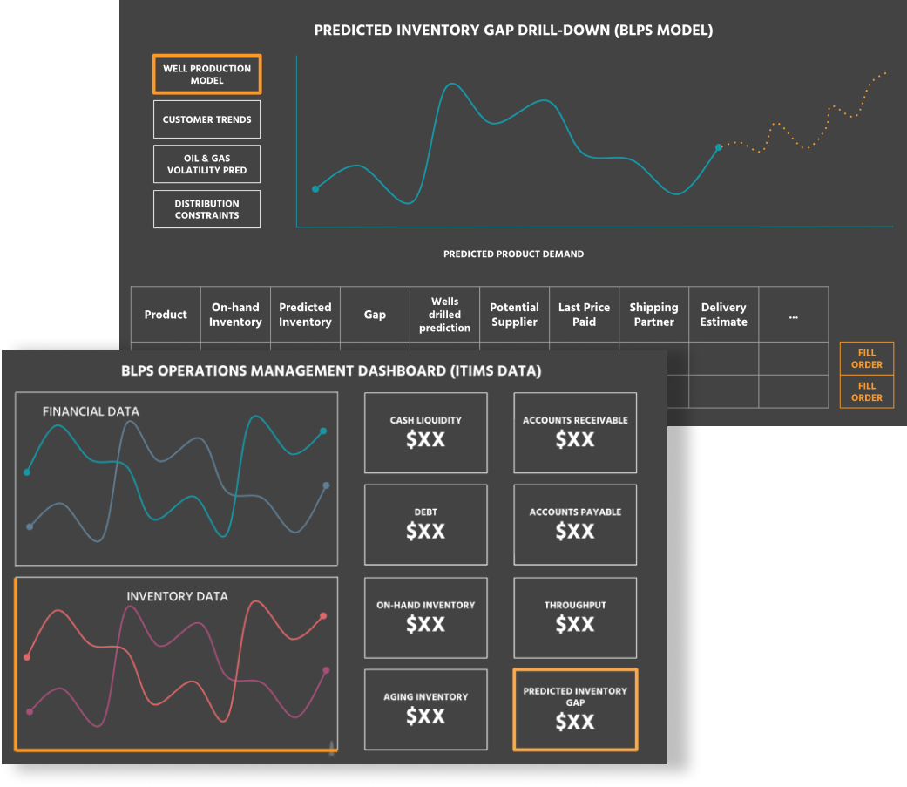
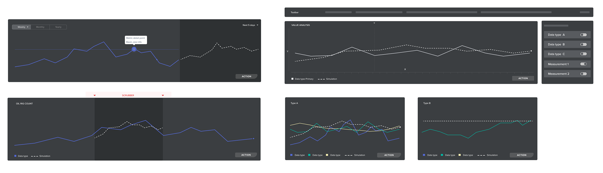
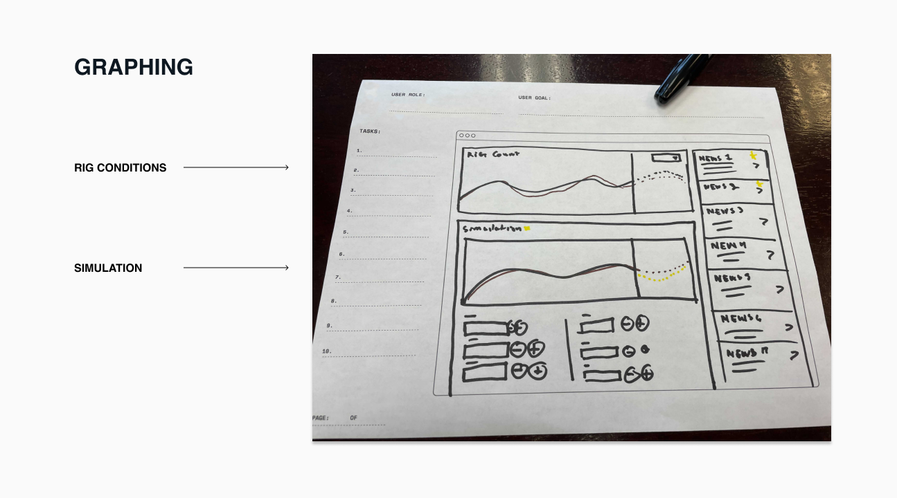
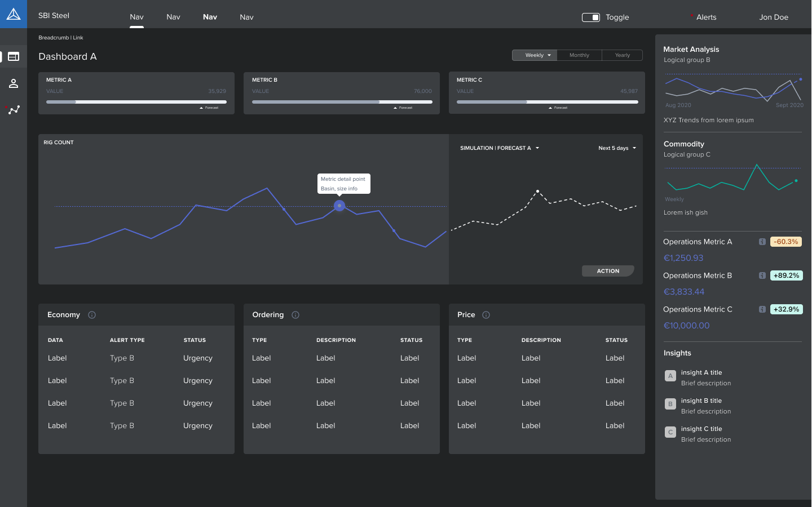
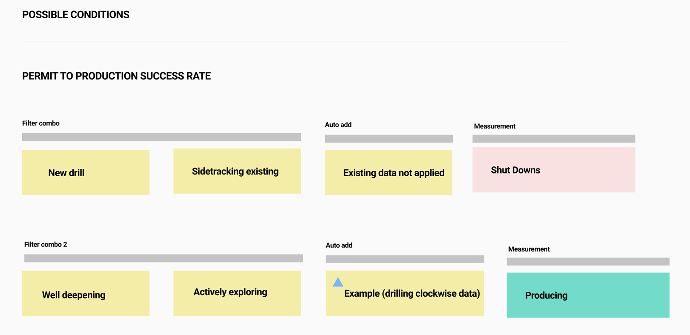
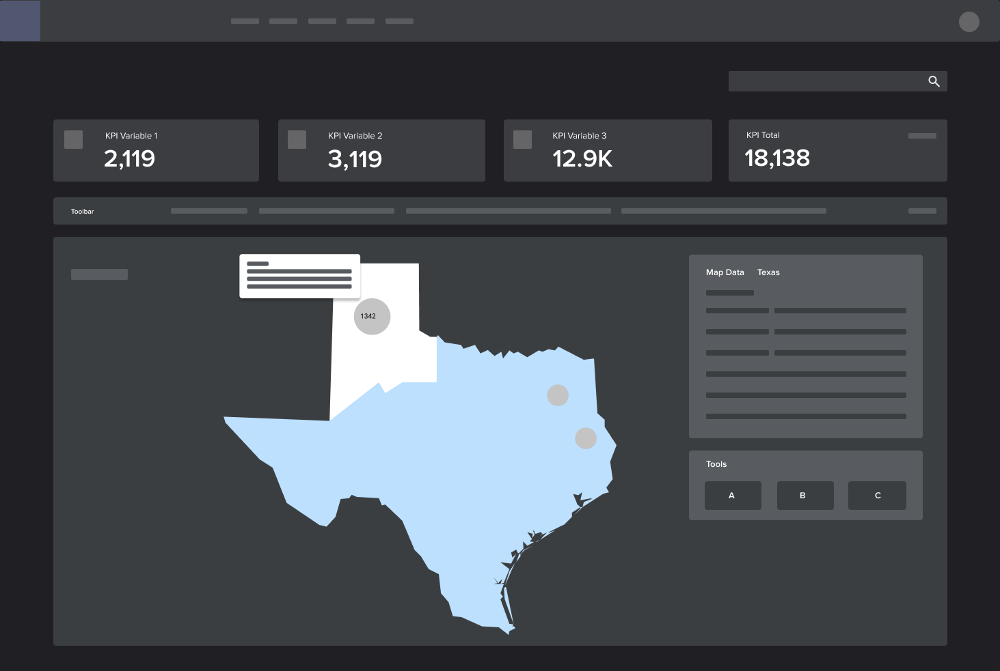
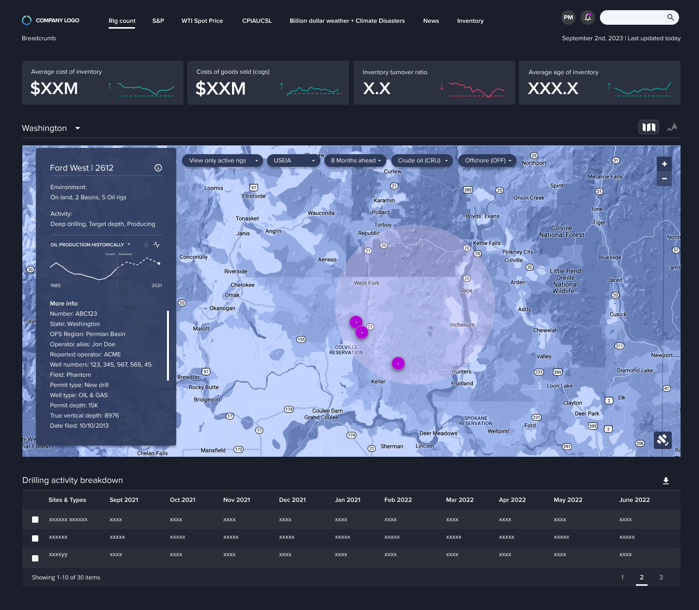

SBI · Oil & gas
Forecasting for sales and inventory decisions.
The users were the people making the business decisions: SBI’s CEO, executives, and sales stakeholders. I designed the dashboard experience around their forecasting questions—how equipment was being used, when replacement parts might be needed, and what that could mean for sales and inventory.

What shipped
V1 brought prediction-model information, inventory and purchasing views, and scenario exploration into a shared dashboard. The design work focused on helping leadership understand the information behind a forecast and connect it to a planning decision.
The team shipped V1 in six months. My focus was to make the relationship between operating activity, forecasts, and inventory clear enough for leadership to examine and discuss.
The forecasting question behind the dashboard
SBI could use rig activity and hardware-sensor data, including publicly available operating data, to assess equipment condition and anticipate demand for replacement parts. For leadership, those two questions were connected: an estimate of remaining equipment life could inform what to stock and when to buy it.
When might this equipment need replacing—and what should we have in stock when it does?
What I owned
- Research into inventory turnover, market indicators, competitor activity, and purchasing needs to inform the dashboard structure.
- The information architecture connecting operating signals, forecasts, and the sales and inventory questions leadership needed to explore.
- Dashboard and chart explorations with executives, using rig count as a shared reference for discussing activity and forecasts.
- Filter interactions, map-based context, and the visual system for a dashboard with dense operational and financial information.
01
Bring the forecast into the business decision
A forecast needed to be considered alongside inventory, purchasing, and financial information. The dashboard brought these views together so executives and sales stakeholders could examine potential demand in the context of stock on hand and the business’s purchasing position.

02
From equipment use to replacement-part demand
A drill bit makes the opportunity concrete. Usage data could help estimate wear and remaining useful life. That estimate could then inform when a replacement might be needed—and when SBI’s leadership should consider buying stock. Leadership could weigh that estimate alongside current inventory and purchasing information.
01 / Read the operating signals
Start with the equipment doing the work.
Rig activity and equipment-usage signals supply operating context. Leadership can examine those inputs before interpreting a forecast.
What is being used, and which signals support this estimate?
Schematic signal traces. Shape explains the relationship; it does not represent SBI measurements.
02 / Interpret the conditions
The same usage can mean different wear.
The drill-bit example connects operating conditions to equipment life. Tougher soil can accelerate wear, changing when a replacement may be needed.
Which conditions and assumptions changed the estimate?
Conceptual curves, not a calibrated wear model. The point is to expose the assumption behind the forecast.
03 / Translate life into timing
A replacement window becomes a demand question.
Estimated equipment life can inform when a replacement part may be needed. Showing that as a window makes the timing—and the uncertainty—available for discussion.
Which part may be needed, and during which planning period?
Illustrative planning timeline. The shaded interval expresses uncertain timing, not a measured confidence interval.
04 / Bring it into the decision
Demand is one input. Buying is the decision.
Leadership weighs the forecast alongside inventory and purchasing information. The interface needs to connect those views, rather than turn a forecast into an automatic buying instruction.
Does stock cover the potential need, and what should leadership review before purchasing?
Review the potential inventory gap
Relative bars explain a possible gap; they are not quantities from the project.
The relationship explained here is drawn from the case study. Diagrams are new explanatory illustrations, not shipped SBI screens.
03
Make the relationship between operating data and demand visible
The executives knew the machinery and the market. The design challenge was to connect that knowledge with operating data: how equipment was being used, which conditions could accelerate wear, and what that might mean for replacement-part demand. A forecast needed to be something they could examine, not just a number to accept.
These chart explorations put recorded data beside a dashed simulation, with weekly, monthly, and yearly views, a selected time window, and controls for data types and measurements. I explored how those controls could help leadership compare signals and scenarios while keeping the underlying data in view. Market activity supplied business context; rig data supplied operating context. Together, they informed the question of which parts might be needed and when.
Choosing the visual form
The question was about change—and what might come next.
A single total could describe activity, but not its direction or timing. A line chart kept time as the shared reference: leadership could follow the operating pattern, examine a selected period, and compare that context with a simulated forecast.

Read a pattern, not an isolated value.
Connecting observations across time makes rises, declines, and changes in direction visible. Weekly, monthly, and yearly controls let the same question be examined at different scales.
Keep the signals in relationship.
The wider exploration places operating series and simulations on a common time axis. The selected window gives leadership a specific period to examine, with data-type and measurement controls defining what is compared.
Separate what is recorded from what is projected.
The solid series carries the recorded pattern. A dashed simulation and a distinct forecast region make the change in evidence visible, so a projected continuation is not read as another measured observation.
Why this matteredThe chart made the forecasting conversation about when a pattern changes, which inputs explain it, and what that might mean for replacement demand—before leadership weighs the inventory decision.
04
Use rig activity as a shared reference
Workshops with executives explored how current rig activity and simulated conditions could be understood together. Rig count remained a consistent reference across the layouts. Paper sketches developed into forecast bars, summary measures, and inventory and purchasing views.

Reading the dashboard hierarchy
An operating signal, surrounded by business context.
Rig activity anchored the conversation, but it was not the only information on the screen. This wireframe explored how summary measures, a forecast, market signals, and operational details could work together at different levels of attention.

01 / At-a-glance context
A number needs a reference.
The three KPI cards pair a value with a horizontal bar and a forecast marker. Weekly, monthly, and yearly controls establish a time frame. The exploration gives the summary a comparison cue instead of leaving each number isolated.
Design intent Make the overview useful for orientation, then let the larger chart carry the explanation.
Wireframe fidelityLabels such as Metric A, sample values, and generic table rows are placeholders. This exploration demonstrates information hierarchy and relationships; it does not establish final metric definitions, calculation methods, or measured business results.
05
Make the assumptions behind a scenario understandable
The filter combinations were a way to explain scenario logic. An operating condition changes which data matters, and that changes how a forecast should be interpreted. For example, tougher soil can make drill bits wear faster. Connecting that condition with equipment usage could help estimate when replacements would be needed and when demand for those parts might increase.
My task was to make those dependencies understandable in the interface: which conditions were selected, which supporting inputs were needed, and which measure the combination produced. The original exploration below maps drilling scenarios through an “Auto add” step to a resulting measurement. It shows how I worked through the logic before presenting it as dashboard controls.

06
Keep location and operating context with the forecast
The map explorations brought regional measures, well details, and drilling activity into the planning view. Alongside the forecasts, that context gave stakeholders another way to examine where activity and potential equipment demand were concentrated.
A rig is one point in a much larger operating system. Onshore fields and offshore drilling sites connect through pipelines to processing and refinery infrastructure, with relationships that can extend hundreds of miles. The design question was how to keep that regional context available while examining a specific site's activity and forecast.
Geography as operating context
A point tells you where. The network helps explain why it matters.
The map provides the spatial reference; the time series provides the operating pattern. Keeping both in view lets someone investigate a location without losing the system around it.
Regional context
Read the location as part of a system.
Nearby points are not the whole story. Connections between fields, gathering infrastructure, offshore sites, and refineries add operating context beyond a single map marker.
Where is activity concentrated, and how does that region relate to the wider operating network?
New explanatory diagram. Pipeline and refinery connections explain the domain; they are not presented as implemented layers in the original product.
01 / Spatial reference
Keep the geography honest.
Use the map for location, distribution, and regional relationships. A cluster shows where sites are close; it does not, by itself, prove that they share a pipeline or operating dependency.
02 / Operating context
Give the selected point a story.
The original detail view pairs a location with environment, activity, well information, and a historical-to-simulated trend. Those attributes give the marker meaning beyond its coordinates.
03 / Forecast context
Carry place and time together.
Region, active-rig filters, and forecast horizon frame the question. Keeping those controls with the map helps stakeholders interpret a forecast in relation to the activity and locations being examined.
Why this matteredThe map connected where equipment operates, what is happening there, and the forecast being examined—adding geographic context to the replacement-demand conversation.


Design-system context
This work used a custom design system designed from the ground up. It provided a shared foundation for the interface rather than treating each screen as an isolated design.